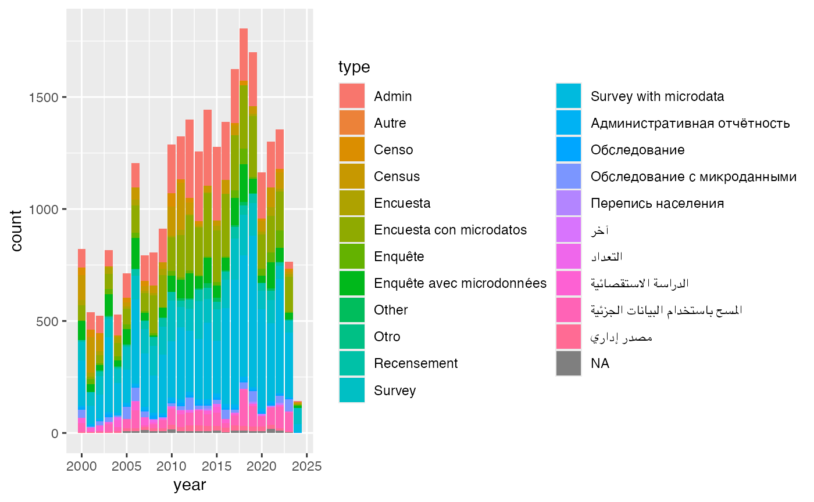
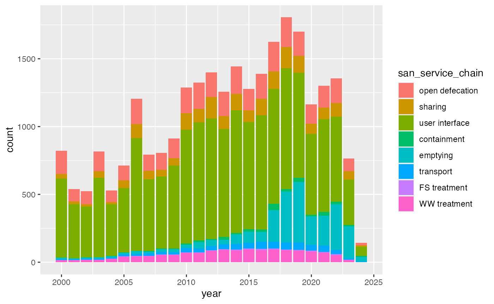
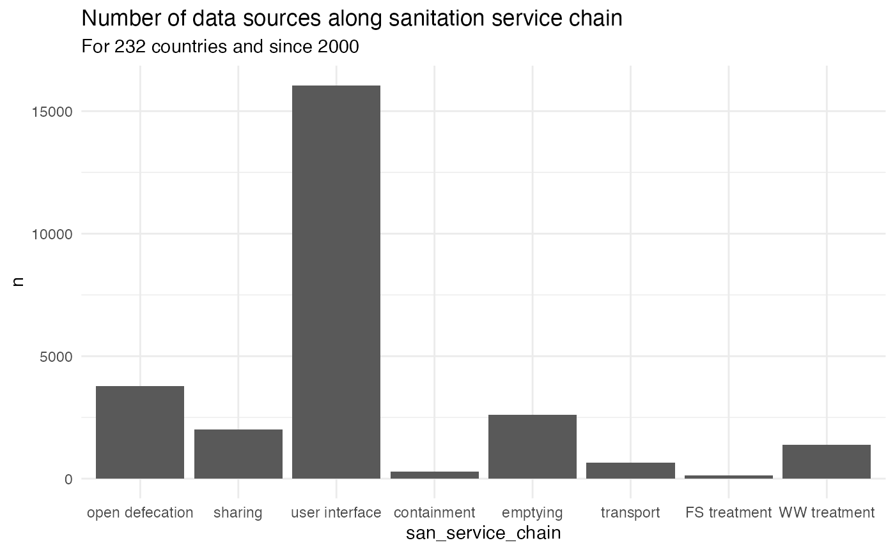
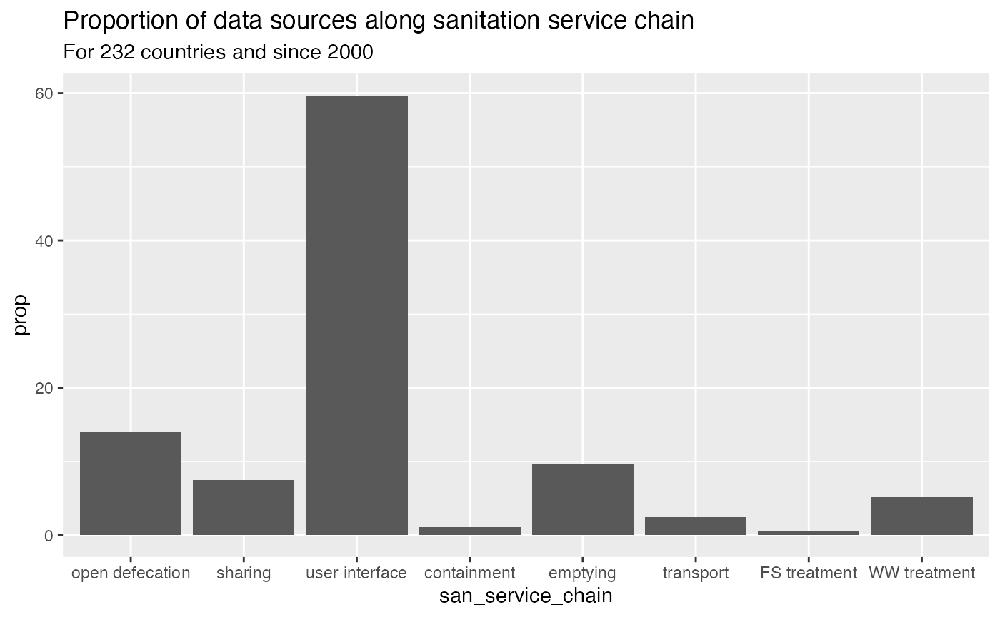
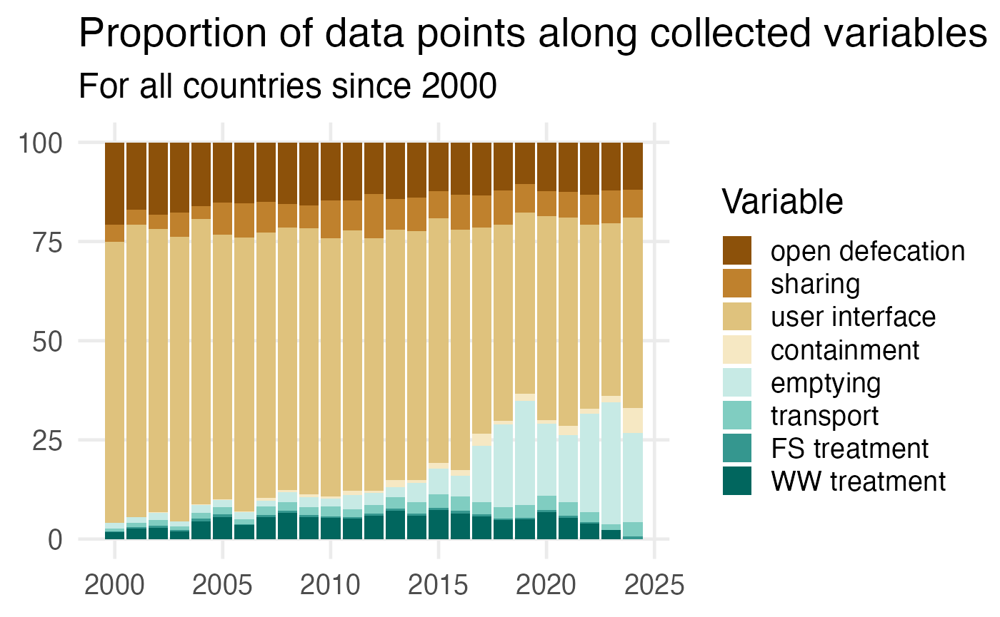
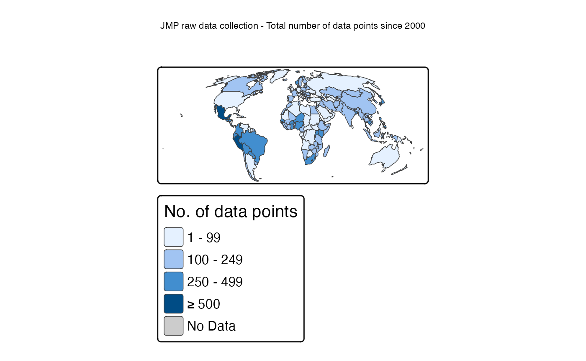
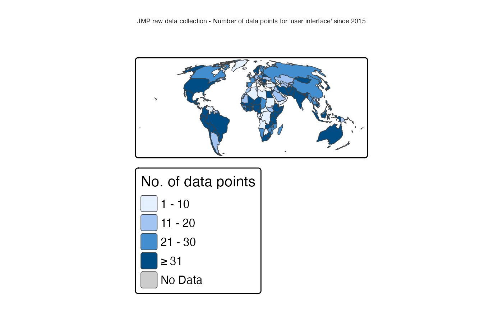
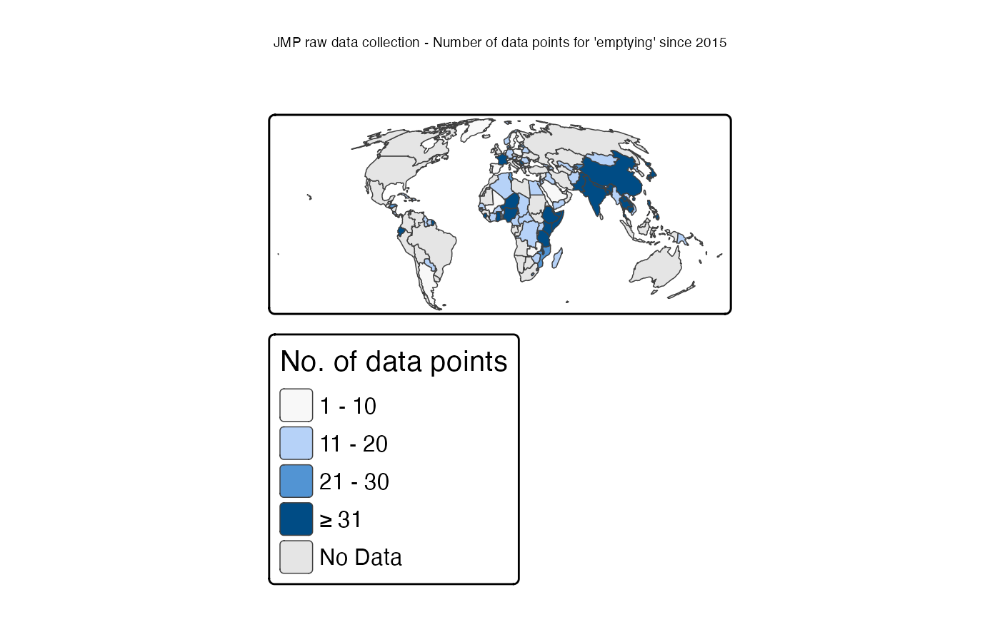
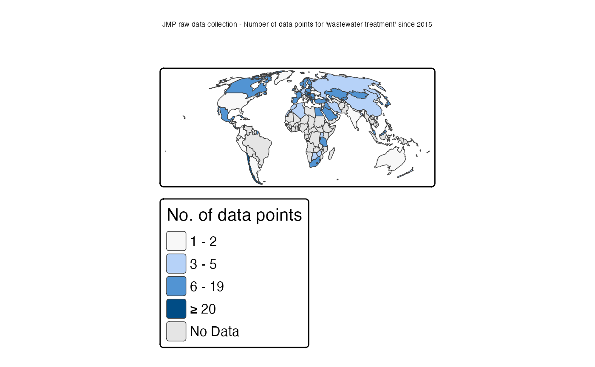
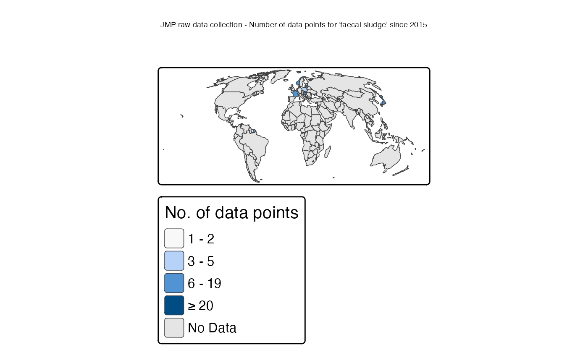

Explore data
Datasets included in the JMP database include:
- Censuses, which in principle collect basic data from all people living within a country. Censuses are always led by national statistical offices.
- Household surveys, which collect data from a subset of households. These may target national, rural, or urban populations, or more limited project or sub-national areas. An appropriate sample design is necessary for survey results to be representative, and surveys are often led by or reviewed and approved by national statistical organizations.
- Administrative data, may consist of information collected by government or non-government entities involved in the delivery or oversight of services. Examples include: water and sanitation inventories and databases, and reports of regulators.
- Other datasets may be available such as compilations by international or regional initiatives (e.g. IB-NET), studies conducted by research institutes, or technical advice received during country consultations.
## # A tibble: 23 × 2
## type n
## <chr> <int>
## 1 Admin 4371
## 2 Autre 4
## 3 Censo 316
## 4 Census 1311
## 5 Encuesta 355
## 6 Encuesta con microdatos 3863
## 7 Enquête 485
## 8 Enquête avec microdonnées 1700
## 9 Other 148
## 10 Otro 3
## # ℹ 13 more rows## # A tibble: 631 × 3
## type source n
## <chr> <chr> <int>
## 1 Survey with microdata MICS 1712
## 2 Admin ES 1704
## 3 Survey with microdata DHS 1309
## 4 Census CEN 1254
## 5 Recensement CEN 691
## 6 Enquête avec microdonnées DHS 528
## 7 Admin EUSILC 478
## 8 Enquête avec microdonnées MICS 386
## 9 Encuesta con microdatos ENAHO 370
## 10 Survey with microdata PMA 351
## # ℹ 621 more rows## # A tibble: 8 × 2
## san_service_chain n
## <fct> <int>
## 1 open defecation 3770
## 2 sharing 2008
## 3 user interface 16055
## 4 containment 295
## 5 emptying 2601
## 6 transport 664
## 7 FS treatment 125
## 8 WW treatment 1375
jmpraw %>%
ggplot(aes(x = year, fill = type)) +
geom_bar()
jmpraw %>%
ggplot(aes(x = year, fill = san_service_chain)) +
geom_bar()
jmpraw %>%
filter(!is.na(san_service_chain)) %>%
group_by(san_service_chain) %>%
count() %>%
ggplot(aes(x = san_service_chain, y = n)) +
geom_col() +
labs(
title = "Number of data sources along sanitation service chain",
subtitle = "For 232 countries and since 2000"
) +
theme_minimal()
jmpraw %>%
filter(!is.na(san_service_chain)) %>%
count(san_service_chain) %>%
mutate(
prop = n / sum(n) * 100
) %>%
ggplot(aes(x = san_service_chain, y = prop)) +
geom_col() +
labs(
title = "Proportion of data sources along sanitation service chain",
subtitle = "For 232 countries and since 2000"
)
jmpraw %>%
filter(!is.na(san_service_chain)) %>%
count(year, san_service_chain) %>%
group_by(year) %>%
mutate(
prop = n / sum(n) * 100
) %>%
ggplot(aes(x = year, y = prop, fill = san_service_chain)) +
geom_col() +
labs(
x = NULL,
y = NULL,
title = "Proportion of data points along collected variables",
subtitle = "For all countries since 2000",
fill = "Variable"
) +
scale_fill_brewer(palette = "BrBG") +
theme_minimal(base_size = 18) +
theme(panel.grid.minor = element_blank())
jmp_iso3_frequency <- jmpraw %>%
count(iso3)
jmp_iso3_user_interface_2015 <- jmpraw %>%
filter(year >= 2015) %>%
filter(san_service_chain == "user interface") %>%
count(iso3, san_service_chain)
jmp_iso3_emptying_2015 <- jmpraw %>%
filter(year >= 2015) %>%
filter(san_service_chain == "emptying") %>%
count(iso3, san_service_chain)
jmp_iso3_ww_treatment_2015 <- jmpraw %>%
filter(year >= 2015) %>%
filter(san_service_chain == "WW treatment") %>%
count(iso3, san_service_chain)
jmp_iso3_fs_treatment_2015 <- jmpraw %>%
filter(year >= 2015) %>%
filter(san_service_chain == "FS treatment") %>%
count(iso3, san_service_chain)Maps
## prepare world maps
## https://r-tmap.github.io/tmap/articles/basics_modes
data("World")
world_moll = st_transform(World, crs = "+proj=moll")
tmap_mode("plot")All data points since 2000
world_moll %>%
left_join(jmp_iso3_frequency, by = c("iso_a3" = "iso3")) %>%
filter(continent != "Antarctica") %>%
tm_shape() +
tm_polygons(
fill = "n",
fill.scale = tm_scale_intervals(
breaks = c(1, 100, 250, 500, Inf),
values.range = c(0.1, 0.9),
value.na = "grey80",
label.na = "No Data"
),
fill.legend = tm_legend(title = "No. of data points"),
lwd = 0.5
) +
tm_title("JMP raw data collection - Total number of data points since 2000") +
tm_layout(scale = 1.5)
top10(jmp_iso3_frequency)## # A tibble: 10 × 2
## country n
## <chr> <int>
## 1 Mexico 617
## 2 Peru 577
## 3 Colombia 462
## 4 Nigeria 462
## 5 South Africa 383
## 6 Cambodia 382
## 7 Costa Rica 366
## 8 Uganda 363
## 9 Ecuador 335
## 10 Bangladesh 332Data points for user interface since 2015
world_moll %>%
left_join(jmp_iso3_user_interface_2015, by = c("iso_a3" = "iso3")) %>%
filter(continent != "Antarctica") %>%
tm_shape() +
tm_polygons(
fill = "n",
fill.scale = tm_scale_intervals(
breaks = c(1, 11, 21, 31, Inf),
values.range = c(0.1, 0.9),
value.na = "grey80",
label.na = "No Data"
),
fill.legend = tm_legend(title = "No. of data points"),
lwd = 0.5
) +
tm_title("JMP raw data collection - Number of data points for 'user interface' since 2015") +
tm_layout(scale = 1.5)
top10(jmp_iso3_user_interface_2015)## # A tibble: 10 × 2
## country n
## <chr> <int>
## 1 Mexico 223
## 2 Peru 220
## 3 Colombia 160
## 4 Kenya 124
## 5 Nigeria 120
## 6 Uganda 114
## 7 Niger 106
## 8 Ecuador 104
## 9 Guatemala 96
## 10 Cambodia 94Data points for emptying since 2015
world_moll %>%
left_join(jmp_iso3_emptying_2015, by = c("iso_a3" = "iso3")) %>%
filter(continent != "Antarctica") %>%
tm_shape() +
tm_polygons(
fill = "n",
fill.scale = tm_scale_intervals(
breaks = c(1, 11, 21, 31, Inf),
values.range = c(0.1, 1),
value.na = "grey90",
label.na = "No Data"
),
fill.legend = tm_legend(title = "No. of data points"),
lwd = 0.5
) +
tm_title("JMP raw data collection - Number of data points for 'emptying' since 2015") +
tm_layout(scale = 1.5)
top10(jmp_iso3_emptying_2015)## # A tibble: 10 × 2
## country n
## <chr> <int>
## 1 Nigeria 112
## 2 Philippines 94
## 3 Cambodia 92
## 4 Niger 72
## 5 Japan 62
## 6 Bangladesh 40
## 7 Ecuador 40
## 8 Kenya 40
## 9 Samoa 40
## 10 Nepal 34Data points for wastewater treatment since 2015
world_moll %>%
left_join(jmp_iso3_ww_treatment_2015, by = c("iso_a3" = "iso3")) %>%
filter(continent != "Antarctica") %>%
tm_shape() +
tm_polygons(
fill = "n",
fill.scale = tm_scale_intervals(
breaks = c(1, 3, 6, 20, Inf),
values.range = c(0.1, 1),
value.na = "grey90",
label.na = "No Data"
),
fill.legend = tm_legend(title = "No. of data points"),
lwd = 0.5
) +
tm_title("JMP raw data collection - Number of data points for 'wastewater treatment' since 2015") +
tm_layout(scale = 1.5)
top10(jmp_iso3_ww_treatment_2015)## # A tibble: 10 × 2
## country n
## <chr> <int>
## 1 Chile 22
## 2 Hungary 20
## 3 Mauritius 17
## 4 Hong Kong SAR China 16
## 5 Macao SAR China 16
## 6 South Korea 15
## 7 Czechia 14
## 8 Georgia 12
## 9 Norway 11
## 10 Saudi Arabia 11Data points for faecal sludge treatment since 2015
world_moll %>%
left_join(jmp_iso3_fs_treatment_2015, by = c("iso_a3" = "iso3")) %>%
filter(continent != "Antarctica") %>%
tm_shape() +
tm_polygons(
fill = "n",
fill.scale = tm_scale_intervals(
breaks = c(1, 3, 6, 20, Inf),
values.range = c(0.1, 1),
value.na = "grey90",
label.na = "No Data"
),
fill.legend = tm_legend(title = "No. of data points"),
lwd = 0.5
) +
tm_title("JMP raw data collection - Number of data points for 'faecal sludge' since 2015") +
tm_layout(scale = 1.5)
top10(jmp_iso3_fs_treatment_2015)## # A tibble: 10 × 2
## country n
## <chr> <int>
## 1 Hungary 9
## 2 Lithuania 9
## 3 France 8
## 4 Japan 8
## 5 Malta 8
## 6 Norway 8
## 7 Poland 3
## 8 Nepal 2
## 9 Austria 1
## 10 Finland 1